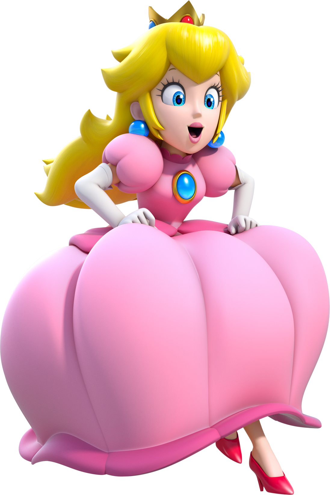

.clone() creates a deep copy of the set of matched elements. The downside of .clone() is that it produces elements with duplicate id attributes, which are supposed to be unique. Click the first image on each row to make clones; click any clone to remove clones:


